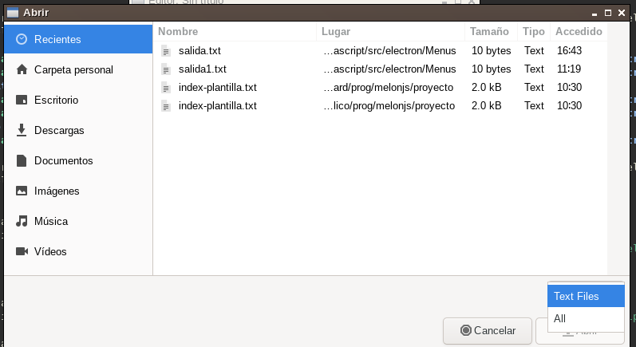

Electron es un módulo "Node.js" instalable con el comando:
$ npm install electron
Electron consiste en un navegador web (de hecho es Chromium) adaptado para crear aplicaciones de escritorio. Con un navegador web normal como Firefox o Chrome no es posible hacer ciertas tareas que realizan las aplicaciones de escritorio, como puede ser escanear el disco duro en busca de archivos o ejecutar comandos. Con electron se pueden ejecutar módulos de "Node.js" sin problemas.
¿Qué aplicaciones están escritas con Electron? Se tiene Microsoft Visual Studio, Atom, Jitsi Desktop, Skype, Terminus,... En general se usará en proyectos en los que se quiera llevar una página web al escritorio. Además es multiplataforma soportando Windows, Linux y MacOS. En la siguiente página se puede ver una lista de proyectos que usan electron:
https://www.electronjs.org/appsSe puede encontrar más información sobre electron en:
https://www.electronjs.orgEn una página web normal, se tiene un cliente, por ejemplo Firefox, que carga la página, el usuario interacciona con la página y fruto de esa interacción se hacen peticiones desde el cliente web al servidor web, usando el protocolo HTTP.
El funcionamiento de Electron será muy similar. En lugar de un servidor y un cliente se tendrá un proceso principal, al que llamaremos "main.js" por comodidad y un proceso cliente, al que llamaremos renderer, que se estará ejecutando en el navegador. El proceso "main.js" tendrá acceso a todo la funcionalidad de "Node.js" y puede interactuar con el sistema operativo. El proceso renderer se ejecuta en el navegador y no puede interactuar con el sistema operativo, pero es capaz de interactuar con el navegador.
Electron es muy amplio y toda su funcionalidad se escapa a este texto. Se simplificará mucho haciendo que los procesos "main.js" y renderer se ejecuten mandando mensajes entre ellos. Por ejemplo, si renderer necesita obtener un listado de los archivos en el disco duro, mandará un mensaje a "main.js". Este mensaje puede tener nombre, supongamos que tiene el nombre "ls". "main.js" ejecutará una función asociada al evento "ls" (hay que indicar para cada mensaje que se quiera usar en la aplicación la función que se ejecutará). Una vez recopilados los archivos del disco duro, "main.js" manda un mensaje, que se puede llamar "respuesta-ls", con los archivos a renderer. Al igual que "main.js", rederer deberá tener asociada una función al mensaje "respuesta-ls".
Es decir, los mensajes deben tener nombre, cada mensaje debe tener una función en renderer y "main.js" que se ejecutará cuando se reciba dicho mensaje. Como ya se habrá deducido, al mandar un mensaje, se le pueden pasar variables que serán pasadas como argumentos a las funciones que procesen el mensaje.
Este mecanismo de paso de mensajes se hará en electron a través de un módulo de IPC (Inter Process Comunication).
El ejemplo se puede descargar desde el siguiente enlace:
src/electron/Proyecto-Basico-Electron.tar.gzEste ejemplo constará de los archivos:
El ejemplo simplemente será una página web con un botón y un cuadro de texto, cuando el usuario pulse el botón, se enviará un mensaje a "main.js" con el texto de cuadro de texto. "main.js" guardará un archivo en disco con el texto y devolverá un mensaje de respuesta indicando a "renderer.js" si el archivo ha sido almacenado correctamente. "renderer.js" mostrará un mensaje alert en el navegador con la respuesta de "main.js".
El programador puede decidir el nombre de los mensajes que se van a enviar entre "main.js" y "renderer.js" y las variables que se van a pasar. En este caso los mensajes y sus variables serán:
Para tener todo ordenado, se crearán las carpetas app (en ella se almacenarán los javascript), html y css:
$ mkdir app html css
El archivo "html/index.html", tendrá los siguientes contenidos:
Como se puede ver tiene comentado la política de seguridad de la página. Por lo demás sólo tiene un textarea, que contendrá el texto a escribir y un elemento li que ejecuta la función "enviar()" cuando es pulsado. Al elemento li le dará aspecto de botón con el siguiente CSS, que se colocará en "css/style.css":
Se va a estudiar ahora el archivo "app/renderer.js":
La función enviar() tiene las siguientes líneas interesantes:
var texto = document.getElementById('texto').value;
En esta línea se toma el texto escrito en el textarea.
Con la siguiente línea se envía el mensaje "guardar" a "main.js" con el texto que se deberá guardar el en archivo:
window.ipcRendererer.send('guardar', texto);
Aquí está disponible el primer método útil para el envío de mensajes entre "renderer.js" y "main.js", el método "ipcRendererer.send()". Su sintaxis es:
window.ipcRendererer.send("nombre del mensaje", argumento1, argumento2, ...)
Se puede poner el nombre al mensaje que se desee y usar tantos argumentos como sean necesarios. Por ejemplo, si se quisiera mandar el mensaje "sumar" con los argumentos 2, 4 y 6:
window.ipcRendererer.send("sumar", 2, 4, 6);
Para capturar mensajes desde el método "main.js" al método "renderer.js" se usará el método:
window.ipcRendererer.on('nombre del mensaje', callback);
donde callback es una función que deberá tener los siguientes argumentos:
En "main.js" se tendrán los métodos equivalentes para recibir y enviar mensajes:
El archivo "app/main.js" tiene un poco más de contenido, pues debe crear la aplicación, crear la ventana del navegador, cargar el "index.html" en el navegador, ejecutar el archivo "preload.js" para compartir los mensajes con "renderer.js", capturar los mensajes de "renderer.js" y contestarle. El código está comentado y se puede entender el funcionamiento general de la aplicación.
Archivo "app/main.js":
Como se puede ver se usan los métodos "ipcMain.on()" y "mainWindow.webContents.send()" para recibir y enviar mensajes a "renderer.js".
Queda un último archivo "app/preload.js" que sólo tiene una línea:
Como ya se dijo este archivo se usará para compartir el objeto ipcRenderer con "renderer.js" y poder enviar y recibir mensajes.
Para ejecutar la aplicación se escribirá en la línea de comandos:
$ electron app/main.js
El proyecto se puede completar añadiendo una archivo "package.json":
Electron permite que desde "main.js" se puedan abrir cuadros de diálogo para que el usuario pueda elegir dónde abrir o guardar archivos:
Para ello se usará el módulo dialog. El archivo "main.js" se modificará de la siguiente forma:
const electron = require('electron');
const app = electron.app; // Modulo que controla la vida de la aplicación
const BrowserWindow = electron.BrowserWindow; // Modulo para crear la ventana del navegador
// Se añade el módulo dialog:
const dialog = electron.dialog; // Módulo para crear ventanas de diálogo
...
// Se añade el cuadro de diálogo de guardar:
ipcMain.on("guardar", async (event, texto) => {
const archivo = await dialog.showSaveDialog(mainWindow, {
properties: ['openFile'],
title: 'Guardar',
filters: [ { name: 'Text Files', extensions: ['txt'] }, { name: 'All', extensions: ['*'] } ]
});
console.log(archivo);
// Se comprueba que el usuario no ha pulsado el botón cancelar
if(!archivo.canceled) {
fs.writeFile(archivo.filePath, texto, 'utf-8' ,(err) => {
if (err)
// Si hay un error en la escritura, se comunica a "renderer.js"
mainWindow.webContents.send('resultado', err.toString(), true);
else {
// El archivo se ha guardado correctamente
mainWindow.webContents.send('resultado', "El archivo se ha guardado correctamente", false);
}
});
}
});
Como se puede ver se usa el método "dialog.showSaveDialog(BrowserWindow, opciones)" para abrir un cuadro de diálogo de guardar. Se le deben pasar como argumentos la ventana del navegador (la ventana queda bloqueada hasta que el usuario haya seleccionado el archivo). Las opciones se deben consultar en la API de Electron, pero las que se han incluido en el ejemplo son las más básicas. Con filters, se indican los tipos de archivos que se mostrarán en el cuadro de diálogo.
Los filtros permiten que el usuario sólo pueda abrir o guardar archivos con determinadas extensiones. Por ejemplo, cuando se abre un archivo usando LibreOffice, el cuadro de diálogo muestra sólo las extensiones permitidas por LibreOffice (odt, ods, doc, docx, ...).
Como se puede ver "dialog.showSaveDialog" devuelve un objeto Promise, que en el ejemplo se evita la ejecución asíncrona usando await.
Se podría modificar el ejemplo para que se pueda también seleccionar el archivo para abrir. Para ello en "main.js" se añadiría la captura de un nuevo mensaje, "abrir":
ipcMain.on("abrir", async (event) => {
const archivos = await dialog.showOpenDialog(mainWindow, {
properties: ['openFile'],
title: 'Abrir',
filters: [ { name: 'Text Files', extensions: ['txt'] }, { name: 'All', extensions: ['*'] } ]
});
console.log(archivos);
// Se comprueba que el usuario no ha pulsado el botón cancelar
if(!archivos.canceled) {
fs.readFile(archivos.filePaths[0], 'utf-8' ,(err, texto) => {
if (err)
// Si hay un error en la lectura, se comunica a "renderer.js"
mainWindow.webContents.send('resultado', err.toString(), true);
else {
// El archivo se ha leído correctamente
mainWindow.webContents.send('archivo', texto);
}
});
}
});
Como se puede ver, para abrir archivos se usará "dialog.showOpenDialog(BrowserWindow, opciones)" que funciona de forma muy similar a "dialog.showSaveDialog". La diferencia principal es que "dialog.showSaveDialog" sólo devuelve un archivo, pero "dialog.showOpenDialog" devuelve un array, ya que, con las opciones adecuadas en "dialog.showOpenDialog" el usuario puede seleccionar múltiples archivos. Con las opciones del ejemplo, sólo se puede seleccionar uno y por ello sólo se toma el primer elemento del array (archivos.filePaths[0]).
Desde el siguiente enlace se puede descargar el ejemplo completo:
src/electron/Editor.tar.gzElectron también permite crear una barra de menú e insertar los típicos menús de Archivo, Editar, Ayuda,... Su uso escapa de las características de estos apuntes, pero el la siguiente plantilla hay un ejemplo de "Editor de Texto" que usa menús. En el archivo "main.js" se tiene información de cómo crear dicho menú:
src/electron/Menus.tar.gzEsta ha sido una pequeña introducción a Electron. Con lo que se ha visto, usando los módulos de "Node.js", se pueden hacer muchos proyectos interesantes. Electron también permite crear menús, menús de contexto, colocar iconos en la bandeja del sistema, abrir múltiples ventanas,... Se recomienda leer los tutoriales disponibles en la página web de electron:
https://www.electronjs.orgOtro módulo interesante es "electron-packager" (https://github.com/electron-userland/electron-packager) que permite crear ejecutables a partir de proyectos de electron para Windows, Linux y OS X.